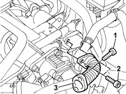

1080C76 EXPANSION JOINT ON E.G.R. - VALVE R.R.
- Path
- Procedures > 10 ENGINE > 1080 EXHAUST EMISSION CONTROL SYSTEM > 1080C exhaust gas recirculation system (e.g.r.) > 1080C76 EXPANSION JOINT ON E.G.R. - VALVE R.R.
- Kind
- repair procedure (removal / refitting; the operation number is the code)
- Applies to
- engines: 1.9 JTD 8V; all production periods
- Interactive page
- https://sloeber94.github.io/elrnDB-a147/en/#/3025068
Applies to: engines: 1.9 JTD 8V; all production periods
 Removing
Removing
 Refitting
Refitting1016A10 sound-proofing cover - r + r
1. Undo the bolts securing the expansion joint to the intake manifold
2. Undo the bolts securing the expansion joint to the EGR electrical valve.
3. Remove the expansion joint from its housing.

Applies to: engines: 1.9 JTD 8V; all production periods
Refitting
RemovingFit the expansion joint in its seat and and tighten the retaining bolts on the intake manifold and EGR electric valve to torque.
 | Fastening | Component | Ø | Value (daNm) |
|---|---|---|---|---|
- | - | - | - | - |
| Fastening | Component | Ø | Value (daNm) |
|---|---|---|---|---|
- | - | - | - | - |